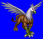
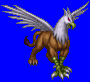
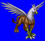
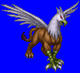

Height: 3-5 meters Weight: 1200 lbs.
Habitat: Ravine, desert caves Origin: India
Meaning: From the Greek "grups" or "bending beak"
The image of the griffon was first formed in India, but the image known today originated from ancient Greece. Griffons have the head and beak of an eagle, and front section of a lion. Regarding world legends about the griffon, it has been cast as a protector of gold, a holy animal, and more. Griffons eat a meat diet, and especially love the meat of horses and pegasi. When a griffon and a mare mate, it is a called a hippogriff.